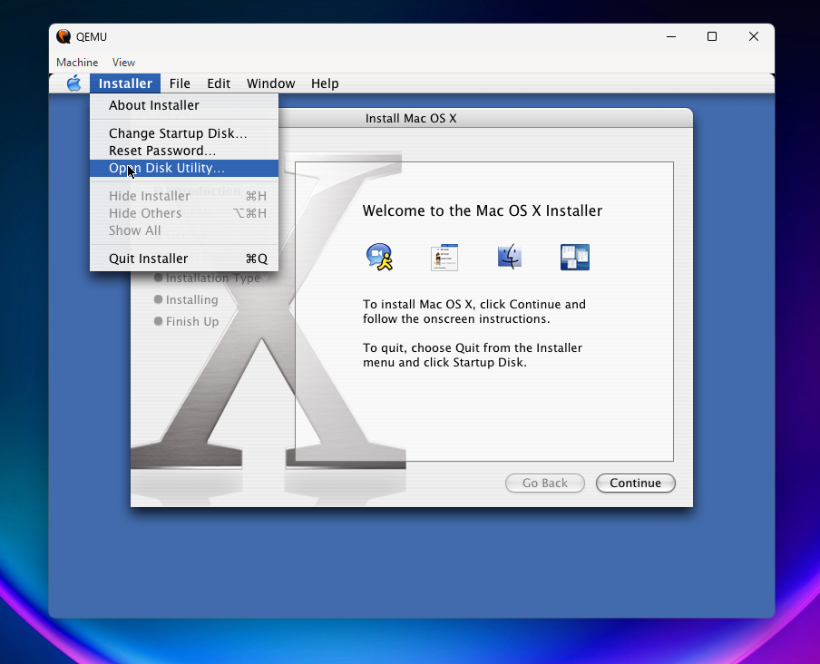
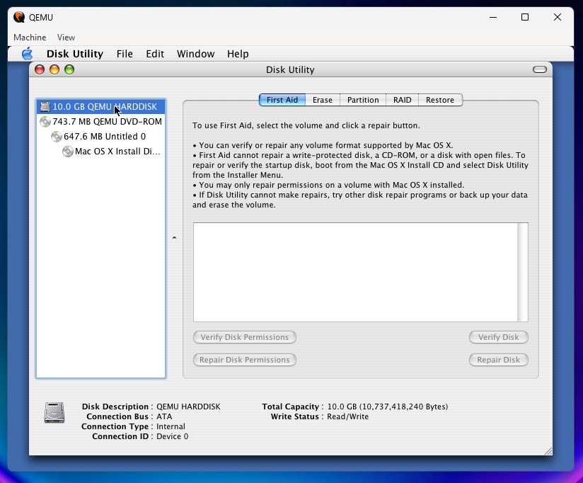
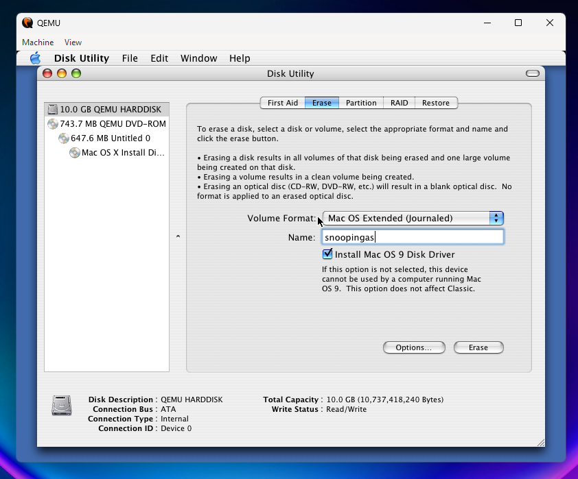
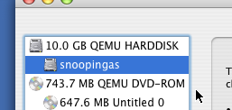
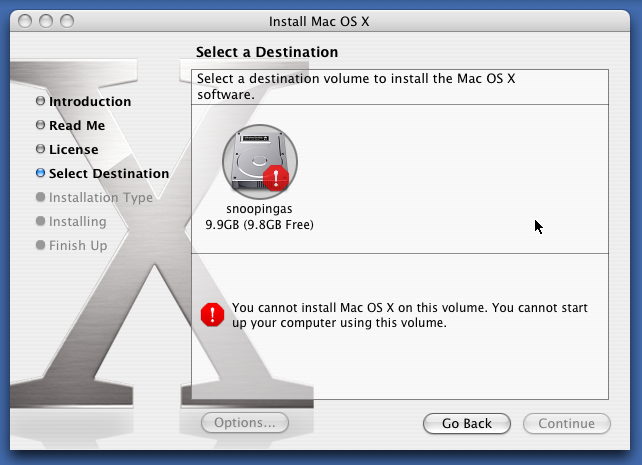

Go back to the main page
Le' Mac OSX 10.0-10.3 emulated on your PC via QEMU
Requirements:
around 20 gbs of space (virtual disk drive + install iso)
QEMU (Emulator)
Warning: If you're installing Mac OS 10.3 you will also need to download Disk 2. More info will be covered in the guide.
The ISO image will come inside a 7z fichier, be prepared to extract it
If you've already installed QEMU, ignore the QEMU installation steps and follow the instructions below on the bottom.
If not, follow these instructions to get QEMU on your machine:
Windows
Download and install
MSYS2.
When installed, look for "MSYS2 UCRT64" in your start menu and open it.
After opening UCRT64, you will see a window resembling a CMD on your screen, this is were you will get QEMU. To do so, type and send the following command:
pacman -S mingw-w64-ucrt-x86_64-qemu
Linux
This will depend on your distribution, and package manager.
I will list a couple of ways to get QEMU on popular distributions.
Ubuntu/Debian
apt install qemu-system
Arch Linux
pacman -S qemu
Fedora
dnf install @virtualization
Gentoo
emerge --ask app-emulation/qemu
RHEL/CentOS
yum install qemu-kvm
SUSE
zypper install qemu
If your distro isn't listed, or the commands here aren't compatible for you, then Google (or your distros' wiki) will be of help to you to locate the package you must install and the way you must install it.
Once successful, you may now prepare the VM.
I would recommend you to make and enter a directory for all this, yk keep stuff tidy.
mkdir macosvm
cd macosvm
In the terminal (or UCRT64 on Windows), create yourself a neat little qcow2 image for you to install that OSX.
qemu-img create -f qcow2 mac.qcow2 10G
Tip: you may change "10G" to any other size, such as 20G or 50G.
After that, identify the directory you're currently in. You will copy the ISO you have downloaded from WinWorldPC to the directory your VDD is in.
Windows
Your MSYS2 folder (the folder where we just created a directory and a disk image in) will be found at C:\msys64\home\yourusername\
Linux
Chances are, you can just do
cp "~/Downloads/Apple Mac OS X 10.X.X - Disk 69.iso" ~/macosvm
and everything will be a-ok. if not, just copy it manually with your file browser or terminal
OMG just hold on tight we're so close to finally starting this mac os stuff i've been teasing
so i recommend you rename the iso you've copied to something more easy to call, like idfk
mac.iso
maybe?
Alright so if you're in the terminal, and you're in the directory where both your qcow2 file and iso file are located, then enter this command to rename the iso to something more simple.
mv "Apple Mac OS X something something.iso" "mac.iso"
Now if you do
ls
And this shows up
mac.iso mac.qcow2
You should now be good to run the virtual machine.
This is the moment you've been waiting for, booting up the ISO and installing Mac OS.
Run the following command.
qemu-system-ppc -L pc-bios -boot d -M mac99 -m 2048 -hda mac.qcow2 -cdrom mac.iso
OMG OMG OMG!!! IT WAS ALL WORTH IT!!! YOU HAVE BOOTED INTO THE MAC OS INSTALLER!!!
Now, before actually proceeding, you will need to format the drive you've previously created, to do that, open Disk Utility and follow these next steps. (omg nextstep reference)
Click on "Installer", and while holding the left click down, hover over "Open Disk Utility", and then let go of the left click.

Select your virtual hard drive.

Go to erase, optionally specify a name, and then click on erase to, appropriately, erase the drive.

And ta-da! a partition under the QEMU HARDDISK drive should appear with the name you've specified.

You can now quit Disk Utility to proceed with the installation by pressing the "Super/Meta/Windows + Q" keys, as it is to quit any application in Mac OS.
You should be able to proceed with the installation without any problems, although there is one present which is somewhat common.

Now, don't worry, you haven't done anything wrong, this is just a quirk with how Mac OS handles drives. This should be fixed via restarting the virtual machine, tl;dr, have you tried powering it off and on again?
But seriously, that is the fix, just close and reopen the VM.
After all that, the set-up should be smooth sailing.
Once the installer finishes installing, CLOSE the virtual machine, and then run
qemu-system-ppc -L pc-bios -boot c -M mac99 -m 2048 -hda mac.qcow2
to finish the setup.
Note for Mac OS 10.3
Remember to get Disk 2, and to copy it in the macosvm folder you've created previously.
Rename it to something more usable.
mv "Apple Mac OS X 10.3 - Disk 2" mac2.iso
Now let's boot the HARD DRIVE, and have the Disk 2 as our CD ROM, as to complete the install without any problems.
qemu-system-ppc -L pc-bios -boot c -M mac99 -m 2048 -hda mac.qcow2 -cdrom mac2.iso
Changed: "-boot d" to "-boot c" (as to boot off the hdd); "-cdrom mac.iso" to "-cdrom mac2.iso" (as to have info on the Disk 2 available to the VM)
Extra
Networking + better mouse control + debug, have fun!:
qemu-system-ppc -L pc-bios -boot c -M mac99 -m 2048 -hda mac.qcow2 -display sdl -netdev user,id=network01 -device sungem,netdev=network01 -prom-env boot-args=-v